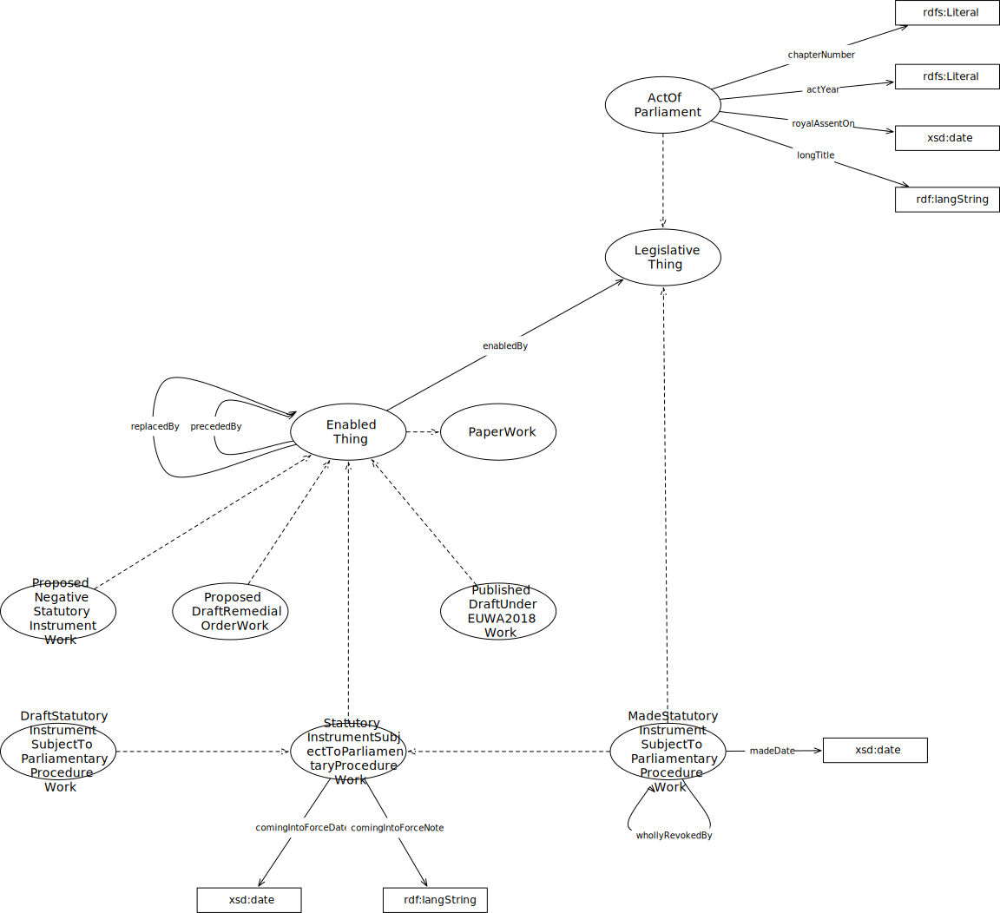

IRI: http://parliament.uk/ontologies/delegation/ActOfParliament
IRI: http://parliament.uk/ontologies/delegation/DraftStatutoryInstrumentWork
IRI: http://parliament.uk/ontologies/delegation/EnabledThing
IRI: http://parliament.uk/ontologies/delegation/EnablingThing
IRI: http://parliament.uk/ontologies/delegation/MadeStatutoryInstrumentWork
IRI: http://parliament.uk/ontologies/delegation/PaperWork
IRI: http://parliament.uk/ontologies/delegation/ProposedDraftRemedialOrderWork
IRI: http://parliament.uk/ontologies/delegation/ProposedNegativeStatutoryInstrumentWork
IRI: http://parliament.uk/ontologies/delegation/PublishedDraftUnderEUWAWork
IRI: http://parliament.uk/ontologies/delegation/StatutoryInstrumentSubjectToParliamentaryProcedureWork
IRI: http://parliament.uk/ontologies/delegation/StatutoryThing
IRI: http://parliament.uk/ontologies/delegation/madeUnder
IRI: http://parliament.uk/ontologies/delegation/precededBy
IRI: http://parliament.uk/ontologies/delegation/actYear
IRI: http://parliament.uk/ontologies/delegation/chapterNumber
IRI: http://parliament.uk/ontologies/delegation/comingIntoForceDate
IRI: http://parliament.uk/ontologies/delegation/comingIntoForceNote
IRI: http://parliament.uk/ontologies/delegation/longTitle
IRI: http://parliament.uk/ontologies/delegation/madeDate
IRI: http://parliament.uk/ontologies/delegation/royalAssentOn
This HTML document was obtained by processing the OWL ontology source code through LODE, Live OWL Documentation Environment, developed by Silvio Peroni.